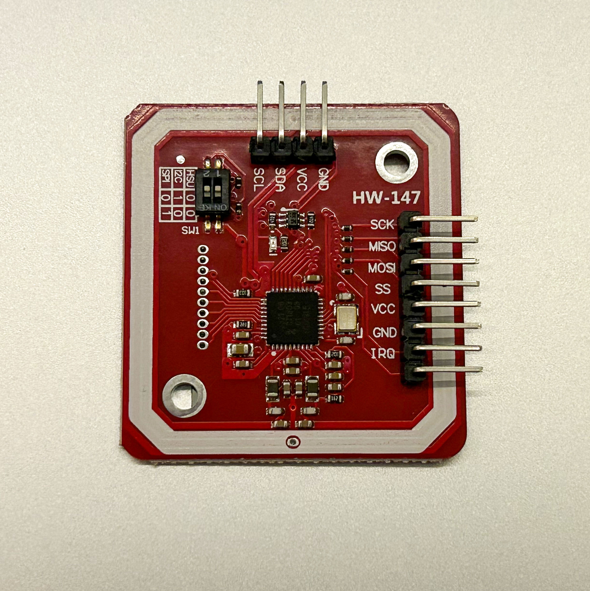
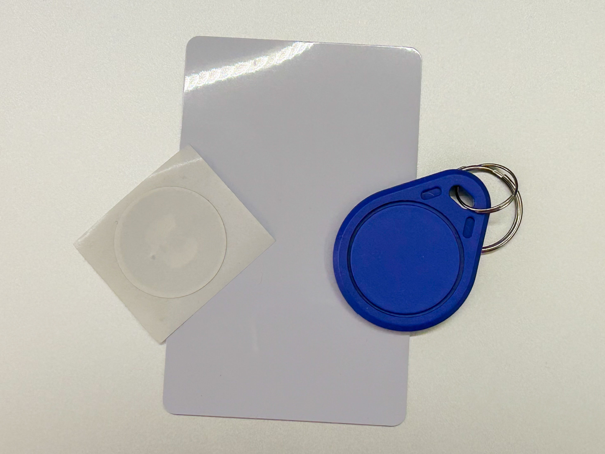
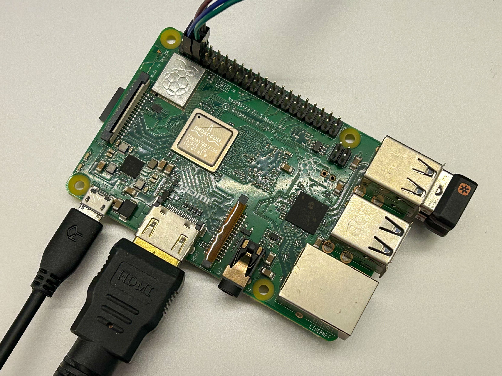
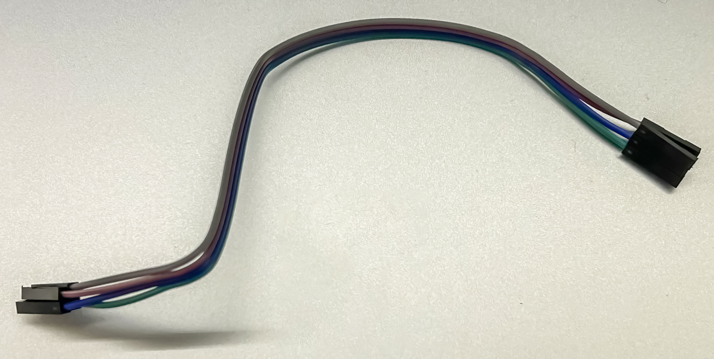

Using the PN532 with the Raspberry Pi 3 Model B+ (Raspbian OS Lite)
Writing and reading NFC tags using the HiLetgo PN532 NFC NXP RFID Module on the Raspberry Pi 3 Model B+ (Raspbian OS Lite), using the I2C protocol.
Required Components
-
HiLetgo PN532 Module

- Writable NFC tags (a tag comes with the PN532 Module)
- Raspberry Pi 3 Model B+ (Raspbian OS Lite)
- Prototyping Wire (Female to Female 2.54mm Jumper Wires)



Steps
Connect the PN532 to the Raspberry Pi. GND should connect to GND, VCC connects to 5V, SDA connects to GPIO 2 (Data), and SCL connects to GPIO 3 (Clock). See I2C at Raspberry Pi GPIO Pinout for more details.
Use sudo raspi-config to enable I2C. This is in Interface Options > I2C. After installing
i2c-tools and wiring up the PN532, we should see that the PN532 is recognized as an i2c device with an
address of 0x24.
sudo apt-get install i2c-tools
sudo i2cdetect -y 1
0 1 2 3 4 5 6 7 8 9 a b c d e f
00: -- -- -- -- -- -- -- --
10: -- -- -- -- -- -- -- -- -- -- -- -- -- -- -- --
20: -- -- -- -- 24 -- -- -- -- -- -- -- -- -- -- --
30: -- -- -- -- -- -- -- -- -- -- -- -- -- -- -- --
40: -- -- -- -- -- -- -- -- -- -- -- -- -- -- -- --
50: -- -- -- -- -- -- -- -- -- -- -- -- -- -- -- --
60: -- -- -- -- -- -- -- -- -- -- -- -- -- -- -- --
70: -- -- -- -- -- -- -- -- We will use libnfc in order to read and write NFC tags.
sudo apt-get upgrade
sudo apt-get install libusb-dev libnfc6 libnfc-bin libnfc-examplesEdit /etc/nfc/libnfc.conf to have the following information:
# Allow device auto-detection (default: true)
# Note: if this auto-detection is disabled, user has to set manually a device
# configuration using file or environment variable
allow_autoscan = true
# Allow intrusive auto-detection (default: false)
# Warning: intrusive auto-detection can seriously disturb other devices
# This option is not recommended, user should prefer to add manually his device.
allow_intrusive_scan = false
# Set log level (default: error)
# Valid log levels are (in order of verbosity): 0 (none), 1 (error), 2 (info), 3 (debug)
# Note: if you compiled with --enable-debug option, the default log level is "debug"
log_level = 1
# Manually set default device (no default)
# To set a default device, you must set both name and connstring for your device
# Note: if autoscan is enabled, default device will be the first device available in device list.
#device.name = "microBuilder.eu"
#device.connstring = "pn532_uart:/dev/ttyUSB0"
device.name = "PN532_I2C"
device.connstring = "pn532_i2c:/dev/i2c-1"
List the connected NFC reader information using nfc-scan-device and then test that it can
detect an NFC tag by using nfc-poll and holding up the tag to the PN532.
nfc-scan-device -v
nfc-scan-device uses libnfc 1.8.0
1 NFC device(s) found:
- PN532_I2C:
pn532_i2c:/dev/i2c-1
chip: PN532 v1.6
initator mode modulations: ISO/IEC 14443A (424 kbps, 212 kbps, 106 kbps), FeliCa (424 kbps, 212 kbps), ISO/IEC 14443-4B (106 kbps), ISO/IEC 14443-4B' (106 kbps), ISO/IEC 14443-2B ST SRx (106 kbps), ISO/IEC 14443-2B ASK CTx (106 kbps), ISO/IEC 14443-2B-3B iClass (Picopass) (106 kbps), Innovision Jewel (106 kbps), Thinfilm NFC Barcode (106 kbps), D.E.P. (424 kbps, 212 kbps, 106 kbps)
target mode modulations: ISO/IEC 14443A (424 kbps, 212 kbps, 106 kbps), FeliCa (424 kbps, 212 kbps), D.E.P. (424 kbps, 212 kbps, 106 kbps)
nfc-poll
nfc-poll uses libnfc 1.8.0
NFC reader: PN532_I2C opened
NFC device will poll during 36000 ms (20 pollings of 300 ms for 6 modulations)
ISO/IEC 14443A (106 kbps) target:
ATQA (SENS_RES): 00 04
UID (NFCID1): 63 6d b3 98
SAK (SEL_RES): 08
Waiting for card removing...done.
nfc_initiator_target_is_present: Target ReleasedInstall dev packages to support pynfc so ctypes can find the relevant packages (libfreefare.so):
sudo apt-get install libfreefare-dev
pip install pynfc